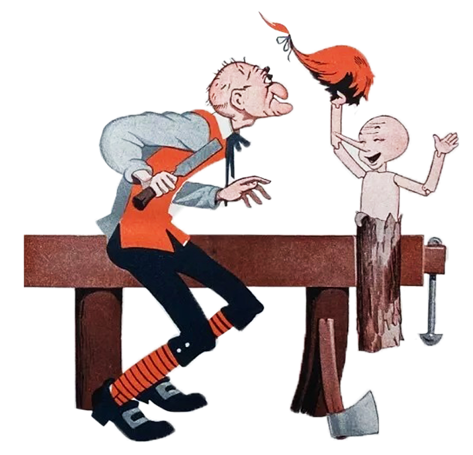
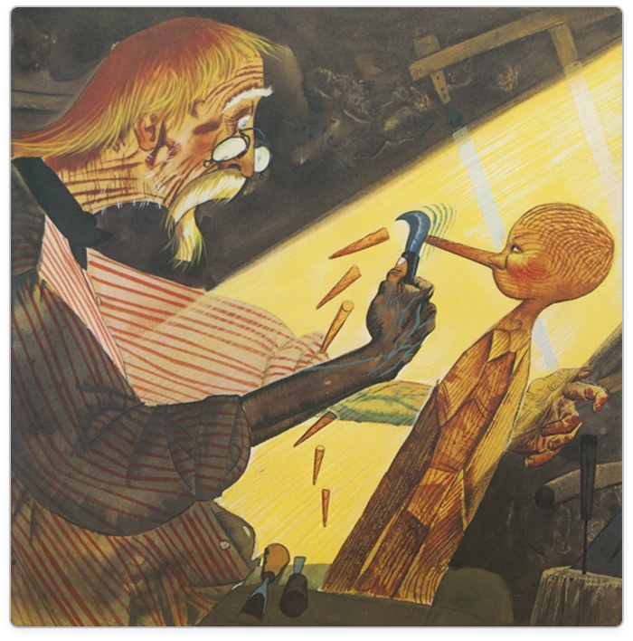
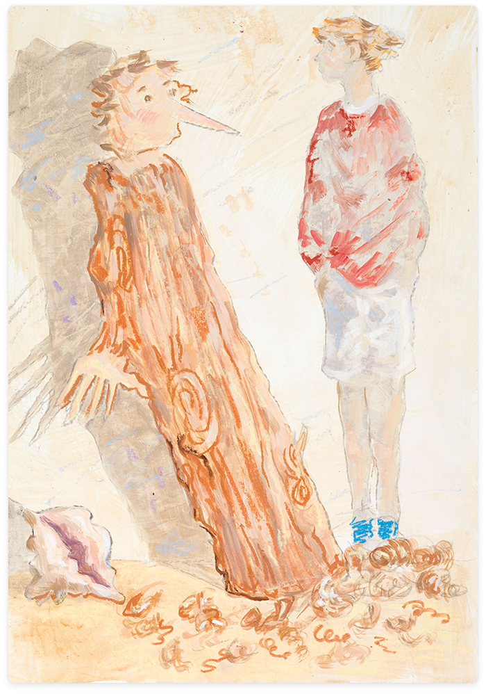

PINOCCHIO 200
Desire to
Become a Father
scroll down to read↓
Loneliness
Sculpture

Illustration by Nico Rossi (1944)
Unlike the authoritarian patriarchal models of the past, Geppetto embodies a more vulnerable, emotional, and at times powerless fatherhood in the presence of the outside world.
Feelings

Illustration by Golpe (1961)
This "fragility" of the father is a much-debated topic in the sociology of the modern family.
Heritage

Illustration by Giampaolo Talani, De Paoli (2016)